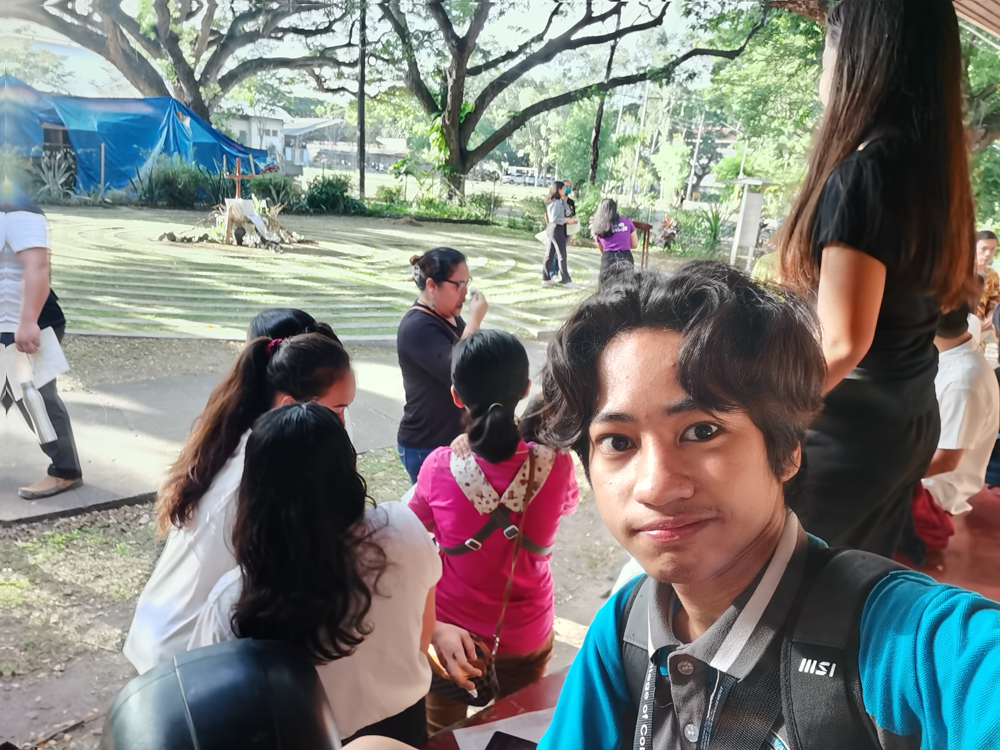

churchSOLIDARITY PRAYER
groupsSU DIVINITY SCHOOL

The SU Experience of Ernest Rojo
The Solidarity Prayer, organized by the SU Divinity School, centered around offering prayers for International Human Rights Day, emphasizing its profound significance. Despite not being a religious person, recognizing and participating in events that commemorate days like International Human Rights Day holds importance in fostering awareness and solidarity.
Attending the Solidarity Prayer provided an opportunity to acknowledge the importance of International Human Rights Day, transcending religious beliefs. While not personally religious, the event underscored the universal significance of human rights and the collective responsibility to advocate for them. It highlighted the value of communal prayers and reflections in recognizing the importance of upholding human rights as a shared commitment.
The Solidarity Prayer has left an impact, emphasizing the broader importance of events that commemorate significant days, regardless of personal religious beliefs. Moving forward, I am inspired to actively participate in initiatives that promote awareness, understanding, and support for human rights. The experience has reinforced the idea that collective efforts, even in a prayerful context, contribute to a shared commitment to justice and human dignity.
Because of the Solidarity Prayer, I am inspired to actively engage in events that promote awareness and support for human rights, transcending personal religious beliefs. The experience has underscored the universal significance of advocating for human rights, and I am committed to contributing to collective efforts that uphold justice and human dignity. Moving forward, I aim to be part of initiatives that foster awareness and solidarity in support of human rights.
Note: Photos may be blurry or unclear prior to October 9, 2023 due to hardware issues
